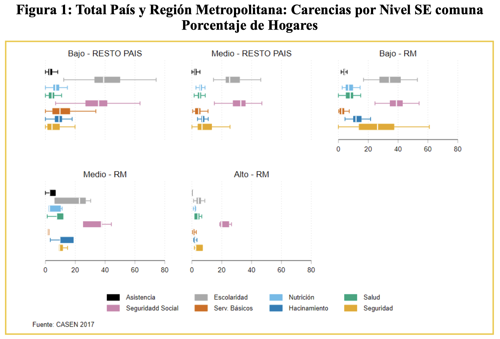
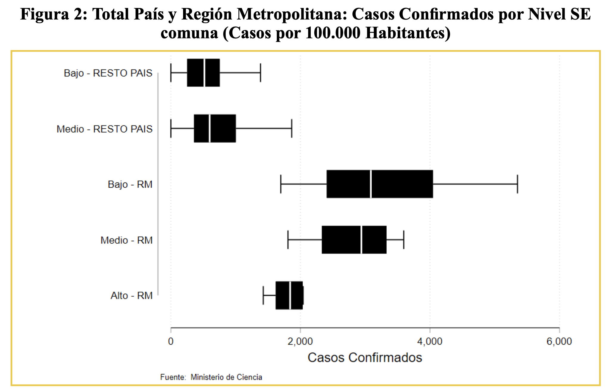
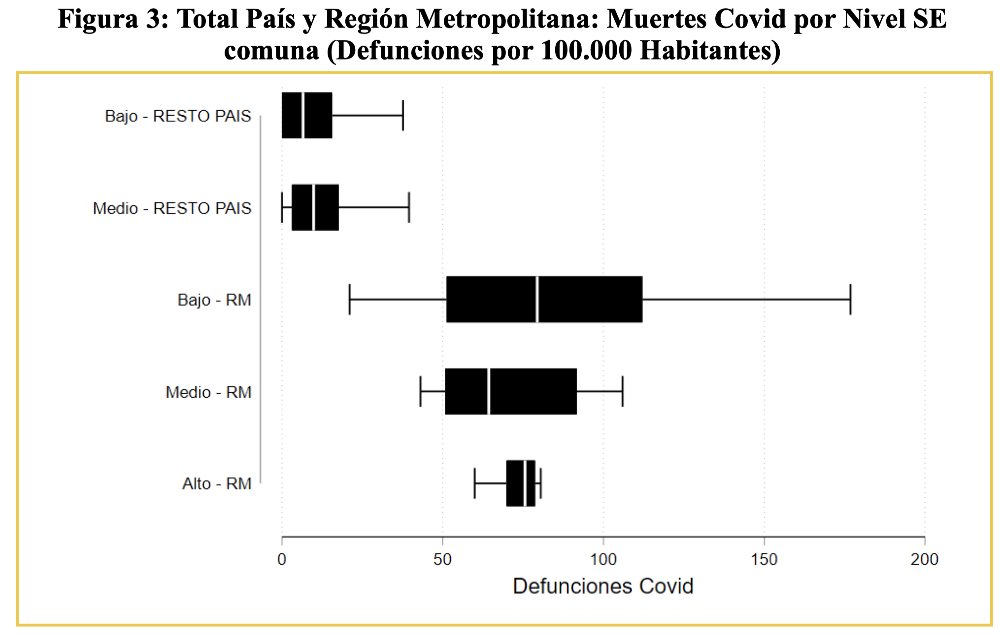
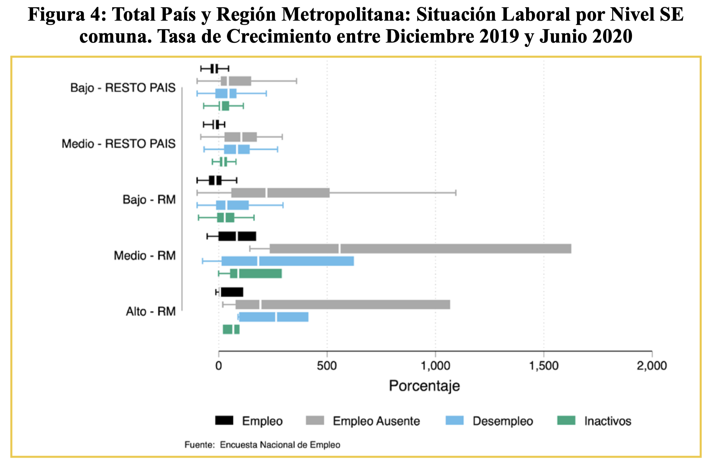

Mercado laboral, inequidades y pandemia
Publicado en la Revista Observatorio Económico de la Facultad de Economía y Negocios de la Universidad Alberto Hurtado
La pandemia del COVID-19 y las medidas de confinamiento para controlarla han golpeado con diferente intensidad a distintos grupos de la población. Los hogares más golpeados, tanto en lo sanitario como en lo económico han sido los hogares vulnerables con mayores carencias y los hogares de clase media. Cabe recordar que la pandemia se inició allá por marzo como un fenómeno importado y estaba asociado a sectores acomodados de la población. Pasados seis meses, al 11 de septiembre, tenemos 430,535 casos confirmados a lo largo del país (lo que significa alrededor de 2,212 por cada 100,000 habitantes).
En Chile existe una alta segmentación socioeconómica territorial y mucho más acentuada en la Región Metropolitana (RM). Se pueden clasificar a las comunas según la fracción de personas que están en los estratos más bajos de ingreso, una clasificación relevante en la focalización de la mayoría de las políticas públicas en Chile. Así distinguimos entre comunas de nivel socioeconómico (SE) bajo (más de dos tercios de la población de la comuna pertenecen a los tres primeros quintiles), alto (menos de un tercio de la población de la comuna pertenecen a los tres primeros quintiles) y de nivel medio (resto). A modo de ejemplo, la comuna de Santiago está en el estrato medio, Vitacura en el estrato alto, pero Recoleta en el estrato bajo. Según nuestra clasificación, no hay comunas clasificadas en el estrato alto fuera de la Región Metropolitana, reflejo de que las comunas en el resto del país son mucho más homogéneas que en la RM. De acuerdo con la Figura 1, a más bajo nivel SE, más altas las carencias básicas, fundamentalmente en cobertura de Seguridad Social, niveles de escolaridad y seguridad. Entre los cinco grupos definidos, el grupo de comunas con mayores carencias son las comunas de nivel SE bajo, tanto de RM como del resto del país, aunque estas primeras tienen carencias en seguridad y hacinamiento mucho más profundas.
Las Figuras 2 y 3 muestran la distribución de los casos confirmados de Covid y muertes para la región metropolitana y resto del país al 7 de septiembre. En el interior del país no hay diferencias importantes en la incidencia del Covid entre tipos de comunas. En la Región Metropolitana la incidencia es mucho más alta, siendo ésta mayor en comunas de nivel SE bajo y medio que entre las comunas de nivel SE alto. En las comunas de nivel SE bajo y medio de la RM, la mediana está en torno a 3000 casos por cada 100,000 habitantes (con una alta dispersión), en tanto que en las comunas de nivel SE alto apenas si supera 1,800 casos. Altos niveles de hacinamiento y baja cobertura de la seguridad social en estos dos grupos pueden explicar seguramente estos resultados. Con respecto a las tasas de muertes, la Figura 2 confirma que por lejos las comunas de ingresos bajos de RM han sido las más golpeadas por la pandemia. La mediana para este conjunto de comunas es 79 por cada 100,000 habitantes y nuevamente con una alta dispersión. Comunas como Cerro Navia, San Ramón, e Independencia presentan las mayores tasas de decesos relacionados con Covid, a la par que también tienen estadísticas de defunciones (no atribuibles a patologías covid) por encima de la norma en relación a las existentes en el año 2018. Es sugestivo que los peores indicadores de prevalencia de Covid están en comunas en las que hay una baja concentración de residentes con empleos virtualizables, y con alto hacinamiento (tal como lo muestra la Figura 1). En las comunas de ingresos altos una alta fracción de trabajadores puede hacer teletrabajo, y por lo tanto independientemente de la prevalencia inicial del virus, el aislamiento ha contribuido a reducir la incidencia actual y la tasa de muertes.
Efectivamente, la pandemia y los esfuerzos por contenerla han significado una reducción considerable de la actividad económica, con sus consiguientes consecuencias sobre el mercado laboral (Figura 4). Mientras en diciembre del año pasado el empleo total creció cerca de 2% en doces meses, en julio de este año mostró una estrepitosa caída de 20.6%. De forma aparejada, la tasa de desempleo trepó desde 7.1% a 13.1% en esos mismos periodos. Más aún, la tasa de participación cayó en esos meses más de 10 puntos porcentuales, lo que evitó en parte que las cifras de desempleo sean aún más abultadas. Detrás de estas cifras existe considerable heterogeneidad por localización geográfica y según nivel socioeconómico de los hogares. La figura 2 muestra la distribución de la tasa de crecimiento del número de empleados y desempleados entre diciembre de 2019 y julio de 2020 para la región metropolitana y el resto del país. En comunas de la región Metropolitana es notorio el impacto de la pandemia y el confinamiento sobre el mercado laboral. Aumenta fuertemente el desempleo en comunas de ingresos medios y altos, a la par que crece el empleo ausente. Y muchos de estos empleados ausentes actualmente amparados en la Ley de Protección del Empleo pueden transformarse rápidamente en desempleados en los meses venideros. Llama también la atención el crecimiento de los inactivos en el estrato medio, lo que sería consistente con tasas de desempleo efectivas mucho más altas de las actualmente registradas en este grupo. En las comunas de ingresos bajos de RM y en el resto de las comunas del país, los cambios en los niveles de desempleo y empleo son menos dramáticos, pero significativos de todas maneras. Más aún, en estas comunas, no se aprecia aún un aumento importante de los inactivos y/o de los trabajadores ausentes. En las comunas de alto nivel SE en la RM, en tanto, es notoria la gran variabilidad entre comunas, particularmente en el crecimiento del empleo, el empleo ausente y el desempleo.
La pandemia ha puesto en evidencia problemas estructurales del país en lo que respecta a cobertura de la seguridad social y hacinamiento, lo que ha golpeado particularmente a familias de ingresos medios y bajos. Las altas tasas de trabajadores actualmente ausentes o suspendidos dan luces de cómo podría evolucionar para peor la actual contingencia. La menor caída del nivel de empleo en las comunas de ingresos más bajos, ha estado asociada a una mayor mortalidad y prevalencia de la epidemia. El costo de no poder parar ha sido alto. Y en cierta manera, nos ponen en guardia a lo que esperar con el inicio del desconfinamiento.
   